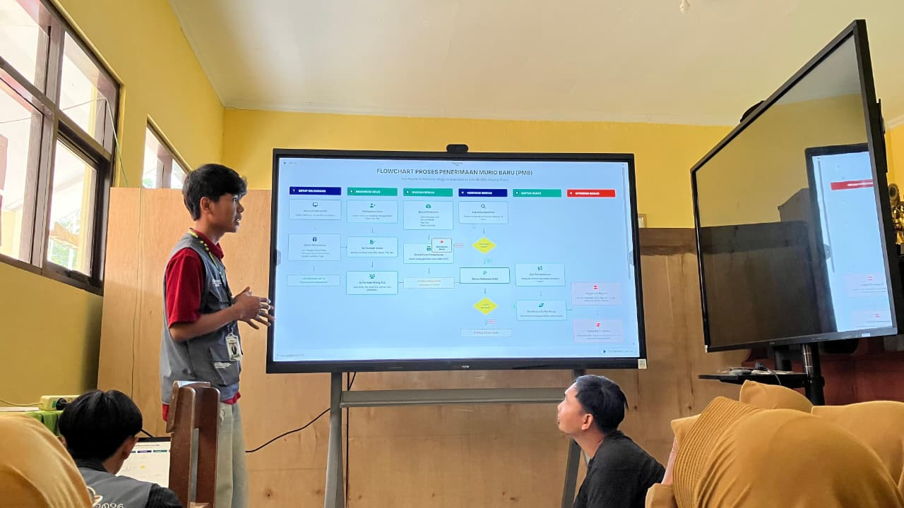
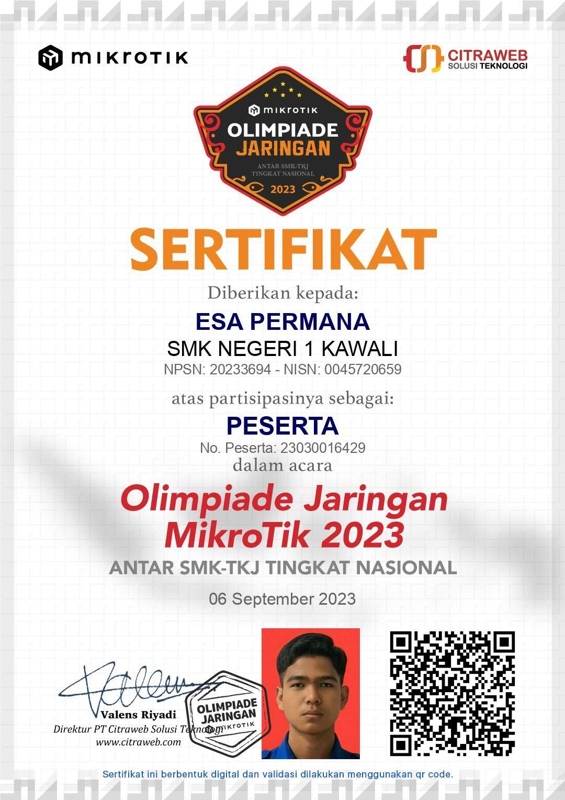

Portfolio
I'M ESA
Hello, I’m Esa Permana, a web and mobile developer who is passionate about creating functional and engaging digital solutions.
Let's Talk →
Coding with logic,
Building with passion
As a software developer, I specialize in full-stack and mobile architecture. With a deep understanding of database management and structural testing (such as white-box testing), I focus on writing code that is not only functional but also secure, well-structured, and efficient.
View my work →Education
Politeknik LP3I
2024 – 2027SMKN 1 Kawali
2021 – 2024SMPN 1 Kawali
2018 – 2021SDN 1 Gereba
2012 – 2018Experience
Inovasi Alfatih Maulana
Sep – Des 2026Mandiri Waterproof
Agt – Feb 2026BEM Kampus
2025 – 2026Technologies & Tools
Built with precision.
ASUP Ciamis
Aplikasi Surat Masuk & Pelayanan Terpadu Kabupaten Ciamis dengan alur verifikasi berkas hierarkis.
Landing Page & Portal Utama
Tampilan selamat datang warga dengan pencarian status berkas dan informasi alur pengajuan dokumen.
Laravel • MySQL • Tailwind CSS • JavaScript
Certificates and
Achievements.
Koleksi sertifikasi keahlian, penghargaan profesional, dan verifikasi kompetensi dalam bidang web, mobile, serta rekayasa perangkat lunak.
Sertifikat Kompetensi



Let’s build something together.
Whether you have an upcoming project, technical inquiry, or full-time opportunity, feel free to reach out.